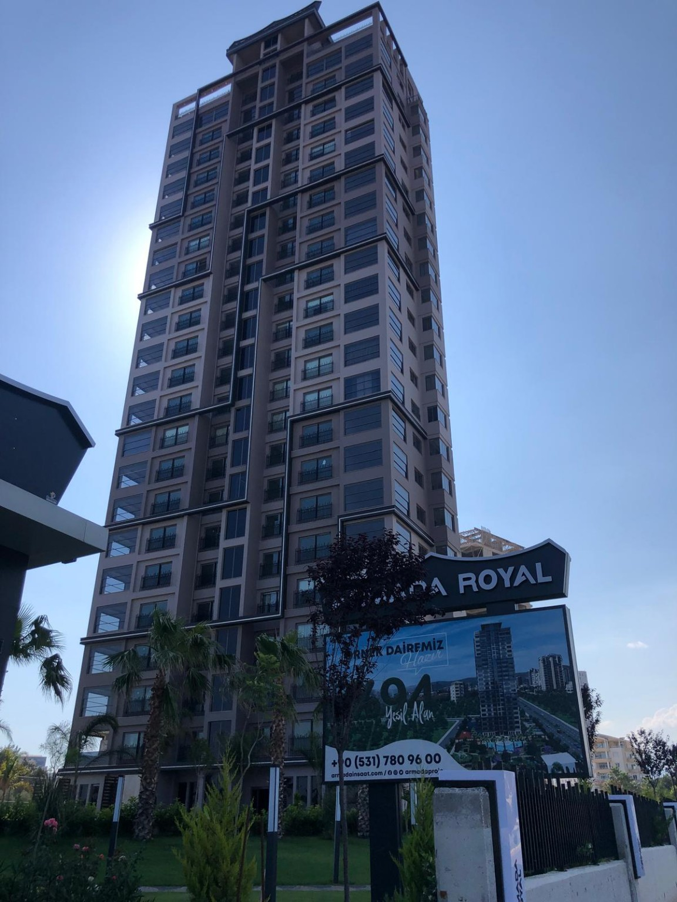
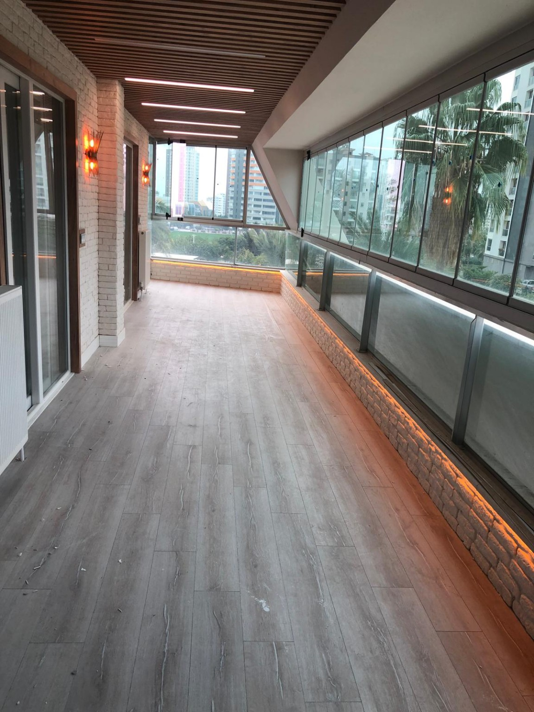
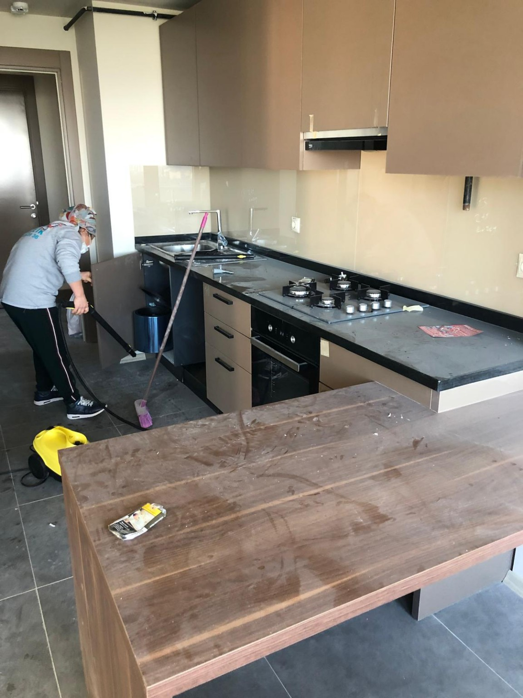
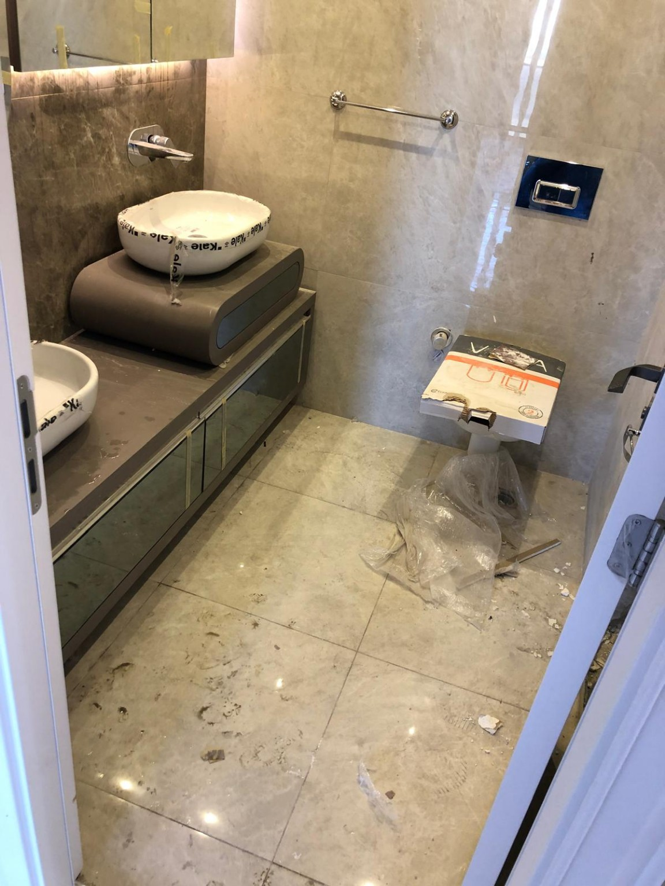
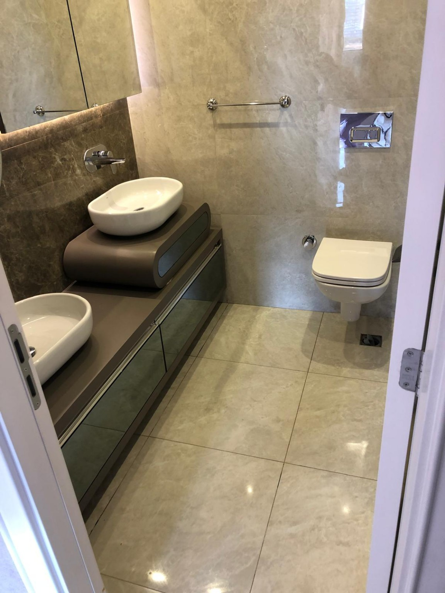
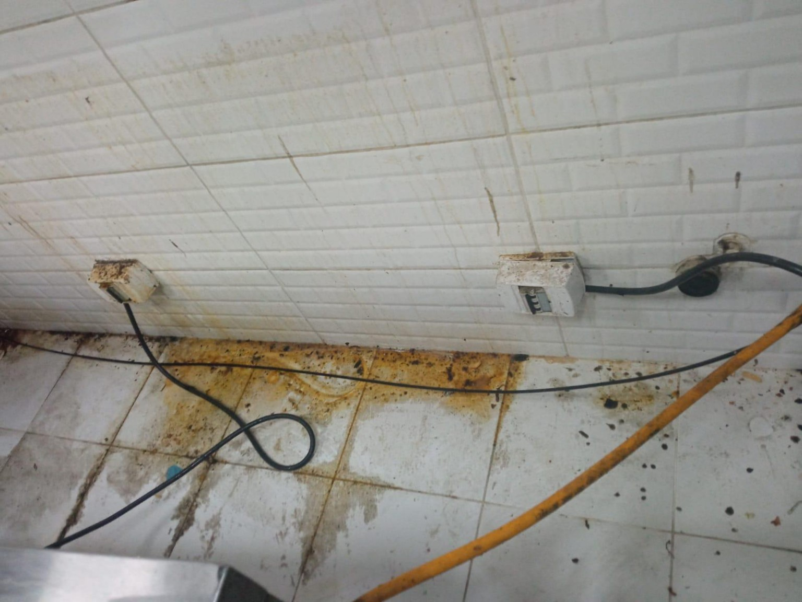
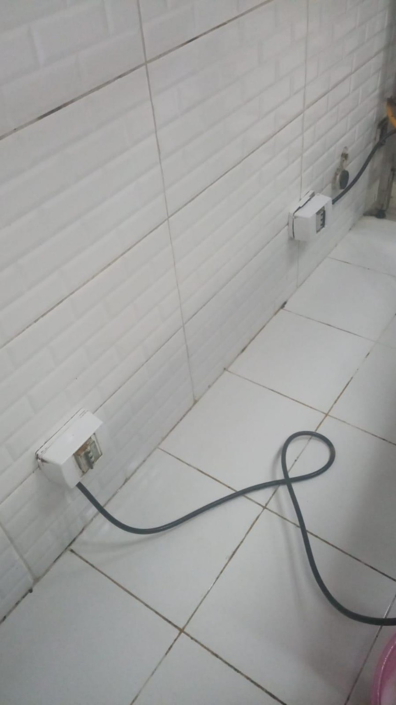
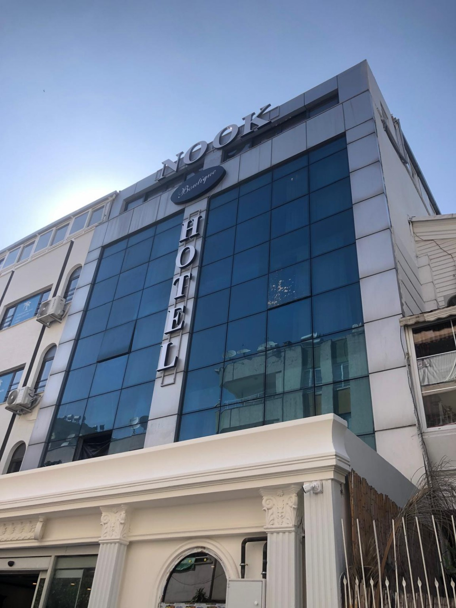

İnşaat Sonrası Temizlik
Yeni tamamlanan daire, bina, iş yeri ve projelerde inşaat sürecinden kalan yoğun toz, kir ve kalıntıların detaylı temizliği.
Hizmeti incele →İnşaat sonrası yapılardan fabrikalara, kurumlardan apartman ortak alanlarına kadar profesyonel temizlik hizmetleri. Her alanı kendi ihtiyacına göre değerlendiriyor, doğru ekip ve çalışma planıyla ilerliyoruz.
Hizmeti standart paketlere sıkıştırmıyoruz. Alanın durumunu, yapılacak işlemleri ve işin kapsamını değerlendirerek uygun çalışma planını oluşturuyoruz.
Yeni tamamlanan daire, bina, iş yeri ve projelerde inşaat sürecinden kalan yoğun toz, kir ve kalıntıların detaylı temizliği.
Hizmeti incele →Fabrika, üretim alanı, depo ve geniş çalışma alanlarının ihtiyacına göre planlanan profesyonel temizlik hizmetleri.
Hizmeti incele →Kurumlar, işletmeler, ofisler ve ticari alanlar için düzenli veya dönemsel profesyonel temizlik hizmetleri.
Hizmeti incele →Apartman ve site girişleri, merdivenler ve ortak kullanım alanlarının düzenli veya ihtiyaca yönelik temizliği.
Hizmeti incele →Taşınma öncesi veya sonrası boş dairelerde, alanın durumuna göre planlanan detaylı temizlik hizmeti.
Hizmeti incele →İnşaat sonrası temizlik, standart bir günlük temizlikten farklıdır. Alanın yüzeyleri, kalan inşaat tozu ve kirin yoğunluğu, temizlenecek detaylar ve işin büyüklüğü birlikte değerlendirilmelidir.
Arin Temizlik olarak işe başlamadan önce alanı inceliyor; gerekli ekip, ekipman ve çalışma süresini işin gerçek ihtiyacına göre planlıyoruz.
Yalnızca metrekareye bakarak fiyat vermiyoruz. Doğru fiyatlandırma için önce yapılacak işi ve alanın mevcut durumunu anlamayı tercih ediyoruz.
Temizlenecek alanın türünü, yaklaşık büyüklüğünü ve ihtiyacınızı kısaca anlatın.
Gerekli durumlarda yerinde keşif yapalım. Uygun işlerde WhatsApp üzerinden video ve fotoğrafları da değerlendirebiliriz.
Alan, kirlilik durumu, yapılacak işlemler, gerekli ekip ve çalışma süresini değerlendirelim.
İşin kapsamı netleştikten sonra sağlıklı ve yapılan işe uygun fiyatlandırmayı oluşturalım.
Arin Temizlik, Mersin'de profesyonel temizlik hizmetleri sunan yerel bir işletmedir. İnşaat sonrası alanlardan fabrikalara, kurumlardan apartman ve ortak kullanım alanlarına kadar farklı ölçekteki temizlik ihtiyaçlarında hizmet veriyoruz.
Her işi aynı şekilde değerlendirmek yerine alanın durumuna, yapılacak işlemlere ve ihtiyaç duyulan ekibe göre çalışma planı oluşturuyoruz. Bu yaklaşım hem işin kapsamını doğru belirlememizi hem de müşterimize daha gerçekçi bir süreç sunmamızı sağlar.
Bu bölümde stok görsel değil, Arin Temizlik Mersin ekibinin sahada gerçekleştirdiği çalışmalardan gerçek görüntüler yer alıyor.

Çok daireli projelerde kat holleri, merdivenler ve ortak kullanım alanlarında kapsamlı temizlik çalışmaları.

Yeni tamamlanan yaşam alanlarında yüzey, zemin, cam ve detayların teslim öncesi temizliği.


İnşaat kalıntıları ve yoğun tozun ardından yüzeylerin detaylı şekilde temizlenmesi.


İnşaat sürecinden kalan toz, ambalaj ve kalıntıların temizlenerek alanın kullanıma hazır hale getirilmesi.


Zorlu kir ve birikintilerin bulunduğu alanlarda ihtiyaca göre planlanan detaylı temizlik uygulaması.

İşletme ve kurumsal alanlarda, alanın yapısına ve çalışma kapsamına göre planlanan profesyonel temizlik.
İlk görüşmede en sık karşılaştığımız soruların kısa yanıtları.
Temizlik ihtiyacı her alanda farklı olduğu için yalnızca metrekare üzerinden fiyatlandırma yapmıyoruz. Alanı yerinde gördükten veya uygun durumlarda video ve fotoğrafları inceledikten sonra işin kapsamına göre fiyatlandırma yapıyoruz.
Evet. Temizlenecek alanı mümkün olduğunca detaylı gösterecek video ve fotoğrafları WhatsApp üzerinden gönderebilirsiniz. Görseller yeterli olmadığında yerinde keşif planlayabiliriz.
Evet. İnşaat sonrası temizlik temel hizmetlerimizden biridir. Yeni tamamlanan daire, bina, iş yeri ve proje alanlarını işin durumuna göre değerlendiriyoruz.
Hayır. Hizmetlerimiz ağırlıklı olarak inşaat sonrası alanlar, fabrikalar, kurumlar, iş yerleri, apartmanlar, merdivenler ve ortak kullanım alanlarına yöneliktir.
Evet. Fabrika, üretim alanı ve depo gibi geniş alanlarda yapılacak çalışma incelendikten sonra gerekli ekip ve çalışma planı oluşturulur.
İhtiyacınızı bize anlatın. Gerekirse yerinde keşif planlayalım veya alanın video ve görsellerini WhatsApp üzerinden inceleyelim. İnceleme sonrasında işin kapsamını ve fiyatlandırmayı netleştirelim.
Fiyatlandırma, alanın yerinde görülmesi veya yeterli video/görsel incelemesi sonrasında yapılır.